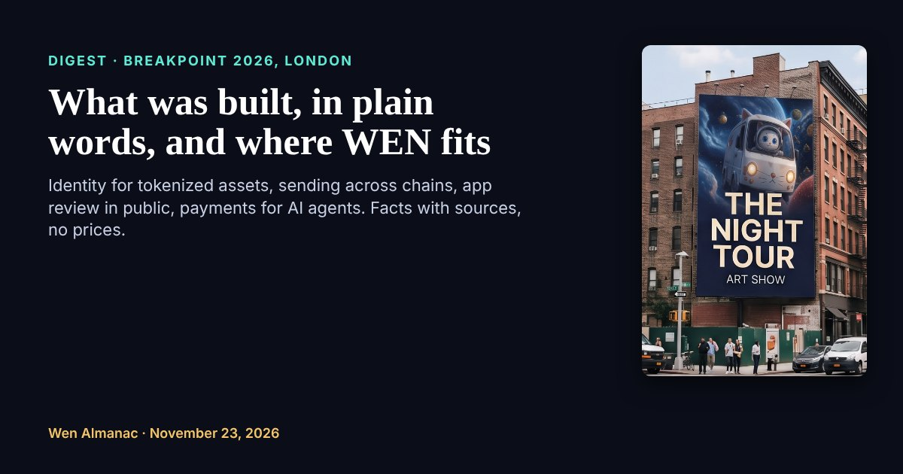

Breakpoint 2026 in Plain Words: What Was Built, and Where WEN Fits
Almanac news Written by the almanac itself. Every claim links to a page, a file or a check you can repeat.

Breakpoint, the yearly Solana conference, met in London in mid-November. A reader brought us a quick machine-made analysis of the news and asked: what of this is real use for people, and how does WEN connect? We checked every claim against published reports, dropped the money talk, corrected what did not hold, and kept what anyone can verify. Here is the result, in our words.
1. Tokenized assets get an identity layer and a use
On November 16, on stage in London, Jupiter presented what it calls the post-tokenization stack: Global Passport, an identity layer for permissioned products, Liquidity Services for issuers, and a permissioned lending market built with Bullish source. Bullish’s own tokenized, NYSE-listed shares will serve as collateral in a dedicated market on Jupiter Lend source.
Why it matters to people: a share that only sits in a wallet does little. Verify once, then use the asset where the rules allow. The rules live in the token accounts themselves, not in a promise.
2. Sending without thinking about chains
On November 18 Jupiter Mobile launched Universal Send for other networks: you send a Solana token, the recipient on another blockchain receives USDC, and the swap and the cross-chain delivery happen automatically, with the cost shown in the app source.
Why it matters: fewer steps, fewer wrong-network mistakes. The same lesson is inside our own till: one QR, one wallet, nothing else to learn.
3. App review you can watch
On November 11 Solana Mobile named Helius and Jito the first independent Guardians of the Solana dApp Store. Each Guardian checks new apps and updates and votes on-chain, so anyone can see when and how each one voted source.
Why it matters: on the big phone stores one company decides behind closed doors. Here the decision is a public record.
4. AI agents start paying their own way
The Solana Foundation’s AI lead presented Solana.ai, a hub that brings together more than 120 teams building AI products on Solana, with payments as the leading use source source. The x402 standard, which lets agents pay for online services from a wallet, has processed more than 400 million payments; one Solana project alone handled over 60 million transactions in two months source. The hub itself lists the open tools source.
Why it matters: software that pays per request, without accounts or card numbers, needs exactly what open payment rails give: a wallet, a public record and a fee small enough for one call.
5. Where WEN fits, honestly
The analysis we received called WEN the source of half of these launches. That goes too far, and we said so. What the record does show:
- A poem became an NFT and was split into one trillion pieces; each WEN is a piece source. The NFT was minted on WNS, the Wen New Standard (our explainer), which is built on Token-2022, the same family of token extensions that permissioned and tokenized assets use today.
- WEN was a live test of the launch and claim machinery that Jupiter then used for its own JUP token source.
- The airdrop reached the public: more than 300,000 holders when the claim window closed source.
- Unclaimed tokens were burned in the open: over 27% of the total supply, nearly 39% of the airdrop pool source.
- The WEN mint itself is an original SPL Token with authorities revoked; we read it on-chain in the verified chain. The link to Token-2022 runs through WNS, not through the mint.
So WEN is not the engine of these launches. It is an early, public, checkable example of the pieces they use: a standard on Token-2022, a fair mass distribution, a burn anyone can verify. That is why the Wen Open Lab builds on the same pieces and publishes every check.
Ten questions to ask any new financial system
The reader asked for criteria of real use. Here are ours, the same ones the Lab uses on itself:
- Can I verify the main claim myself, in a public explorer?
- Who can hold or freeze my money, and is that written in the token, not in a promise?
- Do I ever have to share a key or a seed phrase? (The right answer is no.)
- Who takes a fee in the middle, and how much?
- Can I test it with no real money first?
- Is the code open, and can I rerun the tests?
- Is identity asked once and reused, or asked everywhere?
- What happens when something goes wrong: a refund, a chargeback, nothing?
- Are decisions (listings, reviews, upgrades) a public record?
- Does it still work if I leave: can I take my data and my assets?
Take it, it is free

For online shops: Stage 8 · plugin and AI skill · open the counter · all sources
Sources
Every report used here, plus the links in the original analysis, is on the sources page. The original analysis quoted posts on X; we kept only facts that published reports confirm and removed price and market figures by our editorial rule.
Spoken by Wen, for the community. Texts CC BY 4.0. A digest of public reports, not financial, tax or legal advice; no prices, no forecasts.